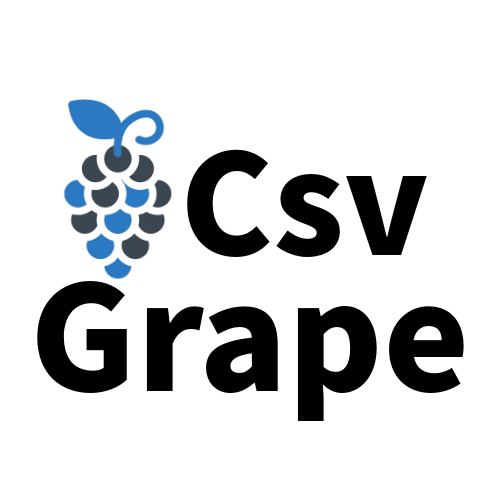
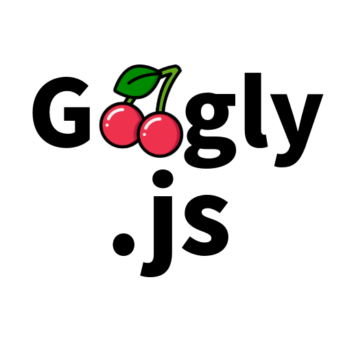
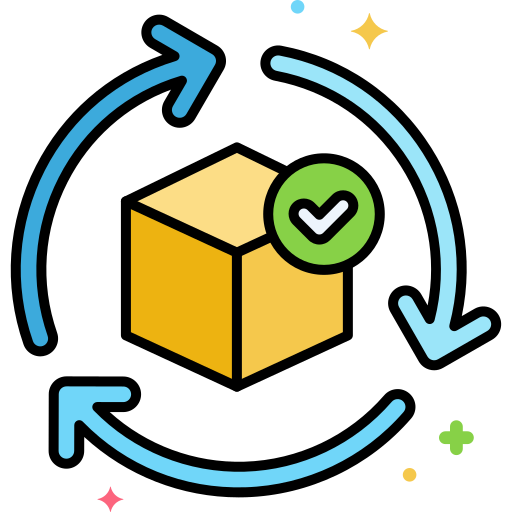

Explore Projects
Ado.Entity
Ado.Entity is an object-relational mapping framework for .NET
applications. Object-relational mapping allows the use of database
queries and operations with object-oriented programming languages.


Csv Grape
A library that handles csv files and its metadata for js or
typescript projects. Don't worry about csv files . This library will
process and perse csv data for you . Available in Nmp .


Googly.js
Googly.js is a very lightweight javascript validation library.If
you don't know how to handle validation in javascript or if you are
searching for a library which can help you to handle validation,
this library is good option.

ObjectToCsv
This library provides an easy way to convert a list of objects into
a CSV (Comma-Separated Values) file. It's particularly useful when
you need to export data from your application to a format that can
be easily imported into spreadsheet software or other tools.

Grapy Copy
grapy is a developer tool designed to simplify the process of
managing code snippets. It allows you to effortlessly capture,
organize code snippets with just a few clicks. grapy
empowers developers to efficiently manage their code snippets and
boost productivity.


Mcp Project Generator
The MCP Project Generator is a VS Code extension designed
to streamline the setup of basic Model Context Protocol
projects for Python,TypeScript,c# and swift. With just a simple
command,developers can quickly generate a ready-to-use project
structure,complete with files and configuration.

Algae Data
Algae Data is a helpful VSCode extension designed to simplify data
format conversions. Specifically, it allows you to quickly and
easily convert data between CSV (Comma Separated Values) and JSON
(JavaScript Object Notation) formats. Built for developers,
analysts, and data nerds.

Ares AI
The Ares Ai extension is a powerful tool designed to help developers
analyze and understand their code more effectively. It provides a
simple yet effective way to select a code block within your editor
and instantly analyze it, providing insights such as code quality,
potential errors, and optimization suggestions.

Young Monk AI
Young Monk is an advanced AI-powered development assistant designed to
handle complex software tasks step-by-step. With tools that let it
create & edit files, explore large projects, use the browser, and
execute terminal commands (with your approval), Young Monk goes far
beyond simple code completion.

Let's Forge the Future of Open Source Together!
Welcome to Ai Thread, a digital frontier where my open-source projects roam free! Here, you'll discover a vast landscape of code, documentation, and resources for a variety of projects I'm passionate about. Whether you're a seasoned developer seeking to collaborate on cutting-edge solutions, or a budding programmer embarking on your open-source journey, Ai Thread is your one-stop shop for inspiration and exploration. I believe in the power of open-source development, a collaborative playground where innovation thrives on shared knowledge and community spirit. Here, you'll find projects that range from c# to typescript – all built with the goal of empowering others and fostering shared growth. Ai Thread isn't just a static archive; it's a living, breathing ecosystem that constantly evolves. Check back often for fresh projects, insightful updates, and opportunities to contribute your own expertise. Whether it's fixing a bug, suggesting a new feature, or simply diving into the codebase to learn, you're an integral part of the Ai Thread community.